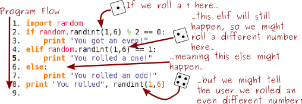

Chapter 6: Random Numbers
The generation of random numbers is too important to be left to chance.
-Robert R. Coveyou
Anyone who considers arithmetic methods of producing random digits is, of course, in a state of sin.
-John von Neumann
You and I both know that computers are deterministic machines. If you give a computer input a it will always return output b. They're totally predictable. So how in the world do we use them to get random numbers?
It turns out that this is actually a really hard problem. There's simply no real perfect way to create random numbers on a computer. But we can get pretty close, and generate psuedorandom numbers, using Python's Random class. Unless you're doing something where you need perfect random numbers, the Random class should be good enough for you.
To begin using random numbers, simply type import random at the top of your program. This gets Python ready to use all the things available to us in the random class.
Then we have a number of functions available to us.
The first is the random() function (not to be confused with the random class). random() makes a random float between 0.0 and 1.0.
- import random
- print random.random()
0.022825570921918503
If we need a larger (or smaller) float, we can instead use the uniform() function.
- import random
- print random.uniform(50,100)
83.695930326604184
We can get random integers with randint().
- import random
- print random.randint(50,100)
77
And we can combine the best parts of randint() and range() with the randrange() function. In this example, we'll pick a random even integer between 50 and 100.
- import random
- print random.randrange(50,100,2)
54
randrange() works by generating a range between your start and stop number, with each number increasing by step, and then chooses a random number from the generated list.
We could do the same thing by using the choice() function.
- import random
- print random.choice(range(50,100,2))
90
Remember that these functions aren't in any way related to the print function: we're just using print to display the numbers to the user. Here's a sample program where we generate a dice roll, and then print messages to the user:
- import random
- roll = random.randint(1,6)
- if roll % 2 == 0:
- print "You got an even!"
- elif roll == 1:
- print "You rolled a one!"
- else:
- print "You rolled an odd!"
- print "You rolled", roll
Notice something else here: we stored our random number before we entered our if statements. Every time you call a random function you might get a different number. This program will have weird results:
- import random
- if random.randint(1,6) % 2 == 0:
- print "You got an even!"
- elif random.randint(1,6) == 1:
- print "You rolled a one!"
- else:
- print "You rolled an odd!"
- print "You rolled", randint(1,6)
Take a look at what happens:
If you're going to use a random value more than once, store it in a variable!
- import random
- variable_to_use = random.uniform(5.0,10.0)
This website will be taken offline before the end of 2011